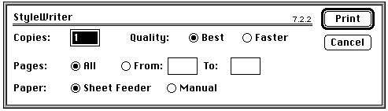
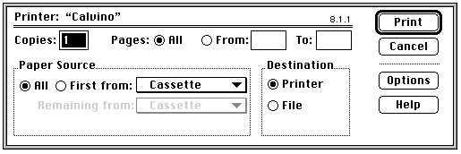

Legacy Document
Important: The information in this document is obsolete and should not be used for new development.
Important: The information in this document is obsolete and should not be used for new development.


From Memory Bits to Printers
Available on all Macintosh computers, the Printing Manager is a collection of system software routines that your application can use to print to any type of connected printer by using the same QuickDraw routines for printing that your application uses for screen display. You can use the Printing Manager to print documents, to display and alter printing-related dialog boxes, and to handle printing errors. The Printing Manager takes much of the work out of coming up with a single way to handle all possible printer environments.Your application uses the Printing Manager procedure
PrOpento open the current printer. (The current printer is the printer that the user last selected from the Chooser.) Before printing, your application should display the job dialog box, which solicits printing information from the user, such as the number of copies to print, the print quality, and the range of pages to print. Your application can use thePrJobDialogprocedure to display a job dialog box. ThePrJobDialogprocedure handles all user interaction in the standard dialog items until the user clicks the Print or Cancel button. Figure 1-20 shows an example of a job dialog box. Your application prints the document in the active window if the user clicks the Print button.Figure 1-20 The job dialog box for a StyleWriter printer

Each printer has its own job dialog box. Thus, a style dialog box for one printer may differ slightly from that of another printer. Figure 1-21 shows a sample job dialog box for a LaserWriter printer.Figure 1-21 The job dialog box for a LaserWriter printer

ATPrintrecord stores information about the choices made by the user in the print job dialog box. Your application can also customize the job dialog box to ask for additional information.When the user clicks the Print button in the job dialog box, your application then uses the Printing Manager function
PrOpenDocto open a printing graphics port, which consists of a graphics port (either aGrafPortorCGrafPortrecord) plus additional information.To set up the printing graphics port to print a page, your application should call the
PrOpenPageprocedure. Your application then prints by using the QuickDraw routines described in this book to draw into the printing graphics port. The Printing Manager uses a printer driver to do the actual printing. A printer driver does any necessary translating of QuickDraw drawing routines and sends the translated instructions and data to the printer. Each type of printer has its own printer driver, which is stored in a resource file in the Extensions folder inside the System Folder. Because your application does not communicate with any of the multitude of available printer drivers but instead uses the Printing Manager to handle this communication, the Printing Manager gives your application device-independent control over the printing process.When your application has finished drawing into the page set up for the printing graphics port, your application closes the page by using the
PrClosePageprocedure. For every page that the user selects to be printed in a document, your application usesPrOpenPageandPrClosePage. When your application has finished printing, your application closes the printing graphics port by using thePrCloseDocprocedure;
your application should then close the Printing Manager by using thePrCloseprocedure.There are two main types of printer drivers for Macintosh computers: QuickDraw printer drivers and PostScript
\xC5 printer drivers. Using QuickDraw drawing operations, QuickDraw printer drivers render images on the Macintosh computer and then send the rendered images to the printer in the form of bitmaps or pixel maps. PostScript printer drivers, on the other hand, convert QuickDraw drawing operations into equivalent PostScript drawing operations, as necessary. PostScript printers have their own rendering capabilities. PostScript printer drivers typically send drawing operations to the printer, which itself renders images on the page. For most applications, sending QuickDraw's picture-drawing routines to the printer driver is sufficient: the driver either uses QuickDraw or converts the drawing routines to PostScript. For some applications, such as page-layout programs, this may not be sufficient; such applications may rely on printer drivers to provide several features that are not available, or are difficult to achieve, using QuickDraw.
Using picture comments, your application can instruct printer drivers to perform operations that QuickDraw does not support. Created with the QuickDraw procedure
PicComment, picture comments are data or commands for special processing that can be included in the code an application sends to a printer driver.A number of picture comments have been given special definitions in printer drivers. The drivers for PostScript printers and even some QuickDraw printers support features unavailable with QuickDraw. When a printer driver encounters one of these comments, it converts it to its own printing code. Other picture comments signal the driver that PostScript code is enclosed, so your application can even include PostScript code directly in the definition of a picture.